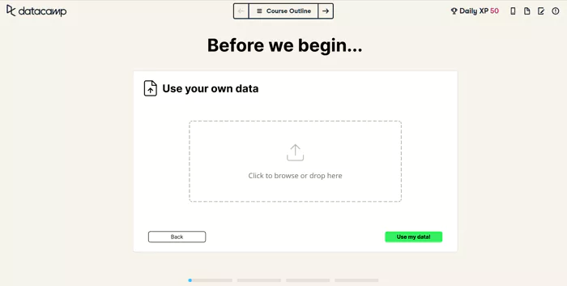
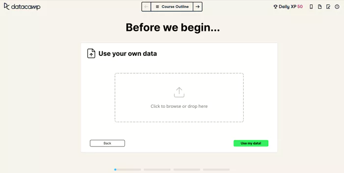

Haggethonners
OnConf

How can DataCamp
engage
&
motivate
more learners?
a solution by the Haggethoners
10—11 March 2023 Leuven
01
Challenges
There are many reasons why someone might experience a lack of motivation when learning.

Some learners find it difficult to find the
time
to learn
What can DataCamp do about it?
Most learners claim they don't have time to complete their courses because oftentimes learning paths fail to fulfill the user's goals. We think that combining Natural Language Processing with the vast catalog of courses DataCamp has can create more efficient learning paths that keep users engaged.

Others might find the courses too hard, tend to get stuck or
progress too slowly
How can DataCamp tackle this?
We are confident that by creating community spaces where users can ask questions and share their achievements will boost the motivation of new learners and smoothen the learning experience.
Someone else may be required use DataCampas part of
their employer’s
mandatory training
How can DataCamp keep these users engaged?
We believe that the best way to keep engagement during training programs is to shorten the gap between the course content and the day-to-day work of these employees. We think allowing the learners to practice with their real datasets or with similar datasets suggested by DataCamp will make mandatory training more useful and interesting to follow.
02
Solutions
We came up with three with ways to encourage learners to start
or continue learning when their motivation is low.
The idea of creating a community tab is a more holistically
way to address
motivation, while the course recommendation engine and the
tailored learning are more specific solutions.
Community
DataCamp currently doesn't have a space where users can
share information about courses they have taken in a
Q&A format.
We think that
the Workspace window could be leveraged to contain more
than just blog-like posts about Data Science notebooks.
This is why in the last 24h
we created UI prototypes that illustrate how DataCamp's
website could be redesigned to host discussions about
course assignments
and Q&As about Data Science related topics.
Better course recommendations
When a person starts looking for a course they might have a final goal in mind but not know exactly what is the best learning path to follow. For example "How can I train a model to classify animals?". This is why we prototyped a NLP model that helps find the best matching courses on datacamp according to the classes derived from the search query tokens.

Tailored Learning
Eventhough DataCamp has a vast course catalogue, it will
never be large enough to adapt to specific user learning
needs.
We think we could tackle this by personalizing courses
based on the datasets users upload to the website.

03
How can DataCamp get there?

Changes in the UI that will foster a engaged community of learners
Search results page with the suggested courses and related community questions.
Community page where the questions take the spotlight instead of workspaces. Users can discuss problems and suggest solutions and/or related courses.
Before the first exercise of the course, the user is prompted to choose the dataset that will be used for the course exercises. They can choose a default one, a generated one based on their use case, or directly provide one.
When choosing for generated or their own data, another page allows them to specify or upload.
 

To train the NLP model, users are utilized by having them solve captchas. The first verifies the user, the second trains the model.